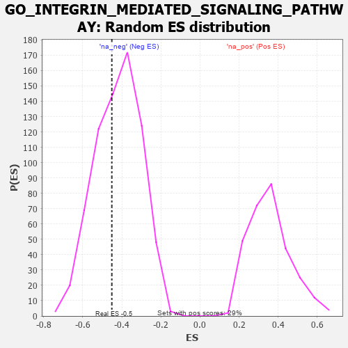

| | | Dataset | 7d |
| Phenotype | NoPhenotypeAvailable |
| Upregulated in class | na_neg |
| GeneSet | GO_INTEGRIN_MEDIATED_SIGNALING_PATHWAY |
| Enrichment Score (ES) | -0.4510981 |
| Normalized Enrichment Score (NES) | -1.0735147 |
| Nominal p-value | 0.39093485 |
| FDR q-value | 0.78408784 |
| FWER p-Value | 1.0 |
Table: GSEA Results Summary
 Fig 1: Enrichment plot: GO_INTEGRIN_MEDIATED_SIGNALING_PATHWAY
Fig 1: Enrichment plot: GO_INTEGRIN_MEDIATED_SIGNALING_PATHWAY
Profile of the Running ES Score & Positions of GeneSet Members on the Rank Ordered List
| PROBE | GENE SYMBOL | GENE_TITLE | RANK IN GENE LIST | RANK METRIC SCORE | RUNNING ES | CORE ENRICHMENT | | 1 | SRC | | | 1128 | 0.459 | -0.0691 | No |
| 2 | CUL3 | | | 1893 | 0.321 | -0.1142 | No |
| 3 | SYK | | | 2186 | 0.278 | -0.1068 | No |
| 4 | VAV3 | | | 2614 | 0.210 | -0.1272 | No |
| 5 | TLN1 | | | 3030 | 0.145 | -0.1564 | No |
| 6 | FUT8 | | | 3551 | 0.067 | -0.2111 | No |
| 7 | CCM2 | | | 3933 | 0.005 | -0.2582 | No |
| 8 | ABL1 | | | 4125 | -0.027 | -0.2780 | No |
| 9 | TIMP1 | | | 4209 | -0.043 | -0.2817 | No |
| 10 | ILK | | | 4510 | -0.096 | -0.3042 | No |
| 11 | CD63 | | | 5680 | -0.370 | -0.3925 | Yes |
| 12 | DOCK1 | | | 5908 | -0.438 | -0.3516 | Yes |
| 13 | CDC42 | | | 6236 | -0.548 | -0.3057 | Yes |
| 14 | ISG15 | | | 6385 | -0.608 | -0.2280 | Yes |
| 15 | ADAM9 | | | 6808 | -0.819 | -0.1513 | Yes |
| 16 | PLPP3 | | | 7740 | -1.876 | 0.0290 | Yes |
Table: GSEA details [plain text format]

Fig 2: GO_INTEGRIN_MEDIATED_SIGNALING_PATHWAY: Random ES distribution
Gene set null distribution of ES for GO_INTEGRIN_MEDIATED_SIGNALING_PATHWAY